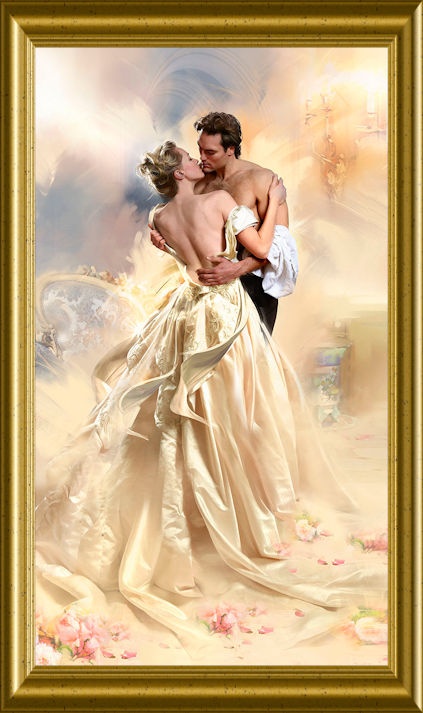

|
De brandende middagzon stond pal boven de grote blauw-witte villa, Luci Del Faro, aan de rand van de kust in Portocuso. Ze reed in haar witte cabrio de brede oprijlaan binnen.
Na het koele drankje dat nonna voor haar had klaargemaakt, ging ze een verfrissende douche nemen. Met een grote handdoek en leuke badkleding wandelde ze rustig naar hun privéstrand. Daar zou ze bij het ruisen van de zee haar stem de nodige rust kunnen bieden. Perle was namelijk de beste sopraan in theater Sale Grando en moest haar stem heel goed verzorgen.
Haar man, Antonio Allegretti, zou binnen enkele uurtjes thuis zijn. Als C.E.O. vond hij het zijn plicht altijd als laatste te vertrekken uit zijn bedrijf Panerai. Een zaak van exclusieve en dure juwelen, vooral horloges. Iedere keer voor hij vertrok uit zijn luxueuze kantoor, belde hij steevast naar zijn geliefd vrouwtje. Na twee jaar huwelijk, wist ze inmiddels dat hij binnen een half uurtje met zijn helikopter zou landen. Perle ging zich omkleden. Ze zou vanavond Iets luchtigs aantrekken met een aangepast jasje erover. Alles lag al klaar voor haar. Vertederend dacht ze aan haar lieve nonna. Nonna Carmela kende ‘haar meisje’ zo goed. Toen haar ouders verongelukten, had ze het arme driejarige kind onder haar vleugels genomen.
Perle hoorde de helikopter landen. Haar Antonio was thuis. Na een liefdevolle begroeting, hoorden ze de gong. Het diner werd binnen twee minuten geserveerd.
Na de heerlijke maaltijd gingen ze buiten in het prieeltje zitten. Antonio dronk zijn cognac en rookte zijn Cubaanse sigaar. Zij dronk enkel een kopje lindethee. Ze moest haar prachtige sopraanstem verzorgen. Daar kwam zijn vraag: “Lieveling, waarom stop je niet met zingen? Ik verdien toch genoeg om alles te betalen en jij kunt dan eindelijk dame des huizes zijn, zoals alle dames uit onze vriendenkring.” Voor dat Perle een antwoord kon geven, kwam het dienstmeisje vertellen dat juffrouw Graziella Allegretti in aantocht was. Nonna was al op de hoogte en had het kamermeisje aan het werk gezet om de logeerkamer piekfijn in orde te brengen. Het personeel was er niet blij mee dat juffrouw Graziella kwam. Zij kon met haar ogen tot recht in je ziel kijken. Ook de opmerkingen, die ze telkens gaf, waren ronduit vernederend. Iemand van lagere klasse moest men niet aanspreken, die moest je bevelen op een onvriendelijke manier. Perle had een drukke agenda en daardoor zou ze haar schoonzus weinig tegenkomen, enkel tijdens het avondeten. Dat was te overbruggen want Antonio was er ook.
De volgende ochtend was Perle al vroeg vertrokken. Ze had afgesproken met Vincenzo, haar impresario. Amedeo Bertoldi, de bekende tenor, wilde eerst het nachtegaaltje zien en horen zingen. Als ze het met elkaar konden vinden en het voelde goed, dan zou Amedeo het contract ondertekenen. Vincenzo hoopte vurig dat het allemaal goed zou verlopen. Een uitstekende tenor en een gouden sopraan, die konden niet anders dan de wereld veroveren.
Perle wist nog van niets, maar dat zou snel veranderen. Vincenzo vroeg haar om haar gedeelte van het theaterstuk nog eens te zingen. Ze zag een knappe zwartharige man naast Vincenzo staan. Hij knikte naar haar. Na een tijdje kwam de man langs haar staan en zongen ze samen verder. Vincenzo werd er zelfs weemoedig van, zo mooi was het. Toen het lied gedaan was, gingen ze naar hem. “Madre Madonna, zo mooi! ” en stak zijn handen in de lucht. Mia care Perle, je kunt er nu niet meer onderuit. Je gaat samen me Amedeo Amerika veroveren, een jaar lang. Ze viel bijna flauw. Hoe zou Antonio reageren? “Vincenzo, je weet toch dat ik niet naar het buitenland ga. Antonio zal er nooit akkoord mee gaan. Hij bindt me nog liever vast op een stoel.” “Perle, je hebt een stem als een nachtegaal. Jij en Amedeo zijn hét perfecte koppel. Amerika zal onmiddellijk aan jullie voeten liggen.” Ja, ze zou dat ook zo graag willen, maar ze had haar man beloofd om geen reizen meer te maken.
Ongerust reed ze naar de villa. Antonio was al thuis. Ze moest het hem vandaag al zeggen. De koe bij de horens vatten, zoals nonna altijd zei. Hij voelde de zesde anonieme brief in zijn broekzak branden. Hij zou er vandaag met haar over spreken. Zou zijn Perle écht daartoe in staat zijn? Geachte heer directeur, denkt U echt dat uw echtgenote U trouw is? Bent U al achter de coulissen gaan kijken tijdens de repetities? U heeft tenslotte vrienden die het goed met U menen.
Toen ze binnenkwam gaf hij haar een vluchtige kus. “Ik moet met je spreken, Perle” zei hij op een vlakke toon. “En ik moet jou ook spreken, lieverd.” "Begin jij maar, dat van mij kan nog wel even wachten." Perle deed haar verhaal op een normale toon. “Wát?” vroeg hij kwaad. “Daar komt niets van in huis! Je hebt het me gisteren nog beloofd. Is er misschien iemand anders? Wat doe je me aan, Perle?” schreeuwde hij woedend. Zou het dan toch waar zijn? Bedroog ze hem en ging ze nu met hem voor een jaar naar het buitenland. Razend liep hij weg. Perle had het verwacht, maar zo’n uitbarsting had ze nog nooit meegemaakt.
Toen ging de gong voor het avondmaal. Er werd niet gesproken aan tafel. Enkel Graziella deed hier en daar een neerbuigende uitspraak. Niemand reageerde. Zwijgend ging Antonio van tafel.
De volgende morgen was hij al vroeg vertrokken. Hij wou haar niet zien. Perle bleef thuis. In de vroege namiddag was hij al terug in de villa. Ze was niet in het theater, zou ze thuis zijn? Nadenkend en voor zich uitstarend zat ze op hun privéstrand “Hoelang zit jij hier?” Ze schrok want ze had hem niet gehoord. “In de voormiddag ben ik hier komen zitten om na te denken.” “Oh ja? Heb je goed nagedacht?” vroeg hij spottend. “Ik heb een besluit genomen. Als jij de wereld wil afreizen met andere mannen, dan doe je dat toch. Ik hou je niet tegen. Maar je ondertekent wel de echtscheidingspapieren.” Perle was zo verbouwereerd dat ze niets zei en naar haar kamer liep. Snikkend gooide ze zich op het bed. Waarom was haar man zo jaloers? Hij had toch helemaal geen reden. En dat is zo’n drie maanden geleden begonnen. Ik moet die papieren ondertekenen. Haar zangcarrière waaraan ze zo hard had gewerkt kon ze wel helemaal vergeten als ze thuisbleef. Wat moest ze dan hele dagen in de villa doen? Waarom moest ze die hartverscheurende keuze maken?
Ze nam een drastisch besluit, pakte haar koffers en stak al het nodige erin. Vincenzo ontving haar enorm hartelijk. “Volgende week vertrek je samen met Amedeo voor de tournee door Amerika. Ik zal alles regelen.”
Het waren vermoeiende en uitputtende maanden in Amerika. Amedeo en zij waren helemaal op elkaar ingespeeld. De Amerikanen lagen aan hun voeten. De pers volgde hen overal. Ze stonden op de voorkant van alle dag- en weekbladen. Het ene weekblad had al mooiere liefdesverhalen van het prachtige koppel dan het andere. Maar Perle en Amedeo waren gewoon vrienden. Ieder had telkens een eigen hotelkamer.
Antonio kreeg die bladen natuurlijk ook te zien. Hij miste zijn prachtig zangvogeltje iedere dag meer en meer. De echtscheidingspapieren lagen nog steeds in zijn kantoor. Hij had ondertussen ook de zevende anonieme brief gekregen. Maar hij voelde heel diep in zijn hart dat er iets niet klopte. Op de foto’s van de roddelbladen zag hij haar en Amedeo lachen, maar haar ogen … die waren zo anders, zo droevig. Ze had een gebroken hart en viel ’s avonds al wenend in slaap. Perle hield nog altijd hartstochtelijk van die ene man, haar man.
Opeens sprong Antonio op, belde naar de luchtvaartmaatschappij en boekte de eerste vlucht naar Amerika. Hij zou de echtscheidingspapieren én de anonieme brieven meenemen.
Het ticket dat hij besteld had, lag aan de ingang van het theater. Haar stem en zijzelf waren bijna breekbaar, zo mooi. Ze kregen een minutenlange staande ovatie. Antonio kon tot bij haar komen in de kleedkamer en gaf haar een dozijn rode rozen. “Mijn liefste zangpareltje, ik kan niet zonder jou. Mijn leven is een hel geworden. Iedereen mist je thuis, niemand lacht nog. Maar ik word verteerd van verdriet, door die zeven brieven waarin geschreven staat hoe jij me bedriegt met andere mannen. Vincenzo lachte me uit en zei dat hij nog nooit een mooiere vrouw had leren kennen die zo ontzettend trouw was aan haar man. Ik schaamde me dood. Wil je me vergeven pareltje?”
Ze viel hem in zijn armen en weende van geluk. “Oh liefste, natuurlijk vergeef ik je. Maar wat is dat van die anonieme brieven?” Hij gaf haar de zeven brieven. Ze las ze allemaal en zei opgewonden: “Liefste, nu begrijp ik je houding van de laatste maanden. Alle puzzelstukjes vallen in elkaar. Ken je me dan zo slecht dat je aan me twijfelt? We hebben er nog zo dikwijls over gepraat: liefde op het eerste gezicht. Er zijn geen twee mensen op de hele wereld die zoveel van elkaar houden als wij. Ken jij iemand die zó ontzettend jaloers omdat wij heel gelukkig samen zijn? Die persoon wil ons uit elkaar drijven met alle mogelijke en onmogelijke middelen. Weet je nog die dag dat ik uit de villa vertrok? Iedereen huilde en die persoon kon niet huilen, zelfs met moeite een lachende grijns verbergen. Herinner je je dat nog? Die persoon gebruikt een heel apart parfum, op maat gemaakt. Heb jij dat dan niet geroken? Wil je er eens aan ruiken?” “Wie ruikt er nu aan brieven?” Even bleef het stil. “Dat kan toch niet waar zijn zeker? Die brieven komen van Graziella, mijn zus. Wil zij dan niet dat ik gelukkig ben?” “Lieveling, ze is verteerd door haat omdat iedere heer haar na enkele maanden laat vallen als een baksteen. Ze kan dat niet verteren. Eigenlijk moeten we medelijden hebben met haar.” Antonio nam de echtscheidingspapieren en scheurde ze in duizend stukken.
Samen namen ze een taxi en reden naar het vliegveld. Tijdens de vlucht hadden ze enkel maar ogen voor elkaar. Zachtjes zei Antonio haar: ” Cara perla di me per sempre e sempre sono tua”. Ze antwoordde op dezelfde verliefde toon: “E io sono sempre con te.”
Toen ze de inrit van de villa opreden, zuchtte Perle heel diep. Ze was nu samen met haar man thuisgekomen. Antonio heeft nooit nog gevraagd om te stoppen met zingen.
Ze waren en bleven voor eeuwig samen.
|